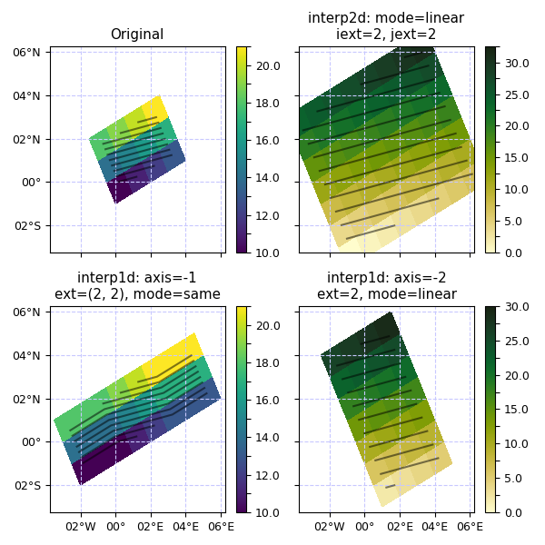

3.5.6.2. test_regrid_extend.py – Test extend1d() and extend2d()¶

"""Test :func:`~vacumm.misc.grid.regridding.extend1d` and :func:`~vacumm.misc.grid.regridding.extend2d`"""
from vcmq import N, create_grid2d, P, rc, plot2d, MV2, set_grid, savefigs, code_file_name
from vacumm.misc.grid.regridding import extend1d, extend2d
# Input data
nxi = 4
nyi = 3
xxi, yyi = N.meshgrid(N.arange(nxi)+.25, N.arange(nyi)-.25)
for j in xrange(nyi):
xxi[j,:] -= j*0.5
for i in xrange(nxi):
yyi[:,i] += i*0.5
gridi = create_grid2d(xxi,yyi) # input cdms grid
vari = MV2.array(N.arange(nyi*nxi).reshape(nyi,nxi))+10.
set_grid(vari, gridi) # set grid and axes
# Extend and plot
rc('font', size=9)
P.figure(figsize=(6, 6))
kw = dict(xmin=xxi.min()-3, xmax=xxi.max()+3, ymin=yyi.min()-3,
ymax=yyi.max()+3, show=False, xhide='auto', yhide='auto')
# - original
plot2d(vari, title='Original', subplot=(2, 2, 1), **kw)
# - extend1d
for i, (axis, ext, mode) in enumerate([(-1, (2, 2), 'same'), (-2, 2, 'linear')]):
varo = extend1d(vari, ext=ext, axis=axis, mode=mode)
plot2d(varo, subplot=(2, 2, i+3),
title='interp1d: axis=%s\next=%s, mode=%s'%(axis, ext, mode), **kw)
varo = extend2d(vari, iext=2, jext=2, mode='linear')
plot2d(varo, subplot=(2, 2, 2),
title='interp2d: mode=linear\niext=2, jext=2', **kw)
P.tight_layout()
savefigs(code_file_name(), verbose=False)
P.close()